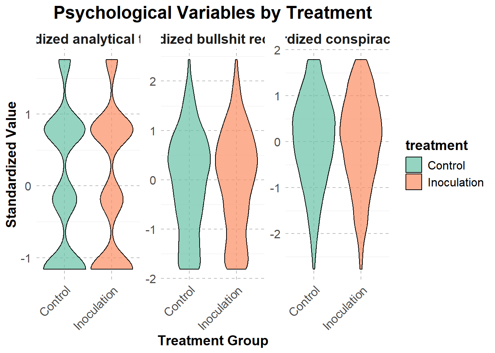
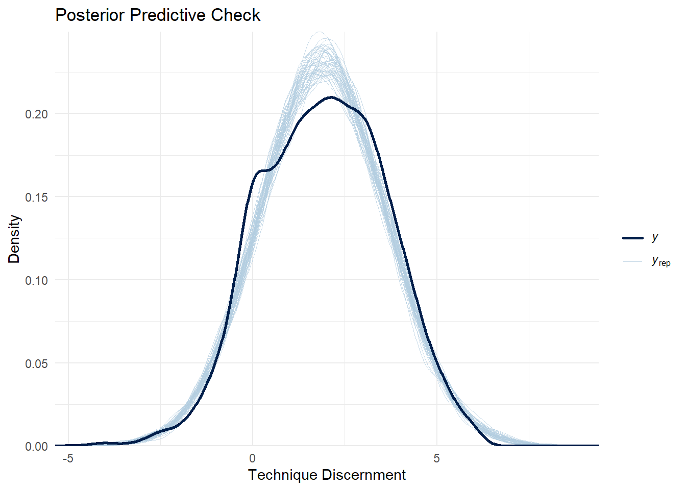

| treatment | technique discernment | standardized analytical thinking | standardized conspiracy belief | standardized bullshit receptivity | gender | education | political ideology | age text |
|---|---|---|---|---|---|---|---|---|
| Control | 1.80 | -0.1850134 | -0.3079313 | 0.20905620 | Male | Master's | Moderate | 18-24 |
| Inoculation | 1.60 | -0.1850134 | -0.1255872 | -0.00324102 | Male | Master's | Conservative | 18-24 |
| Inoculation | 1.40 | -0.1850134 | 1.7890255 | 0.52750204 | Male | Doctorate | Moderate | 25-34 |
| Control | -0.40 | -1.1587213 | -0.4902753 | 0.10290759 | Female | Master's | Liberal | 35-44 |
| Inoculation | 1.75 | -0.1850134 | 0.6949611 | 1.69513676 | Male | NA | Conservative | 35-44 |
Defending Against Manipulation: The Impact of Psychological Inoculation on Social Media Discernment
An Analysis of Technique Discernment and Demographic Influences
Abstract
Social media platforms have increasingly become battlegrounds for the dissemination of manipulative and deceptive content. This study investigates the efficacy of psychological inoculation in enhancing users’ ability to discern manipulative from neutral content on social media, a concept referred to as ‘technique discernment.’ Utilizing Bayesian regression models and survey data, we examine the relationship between inoculation treatments and discernment scores while accounting for demographic and psychological covariates. The results reveal significant differences in discernment ability between treatment and control groups, highlighting the promise of inoculation as a tool for combating misinformation. These findings underline the importance of psychological resilience in navigating online ecosystems and inform strategies for future interventions.
1 Introduction
Social media’s influence on public opinion has brought increasing attention to the concerns about misinformation and manipulative content. These platforms facilitate the spread of misleading narratives that shape beliefs, decisions, and behaviors. Addressing this challenge is vital to preserving informed decision-making and democratic processes.
Psychological inoculation offers a proactive approach to misinformation, arming individuals with the tools to resist manipulation before exposure. Analogous to a medical vaccine, inoculation introduces individuals to weakened forms of manipulative techniques, fostering resistance to their influence when encountered in real-world scenarios. This research examines the efficacy of psychological inoculation in enhancing “technique discernment”—the ability to distinguish manipulative content from neutral information—on social media.
This study uses data from a carefully controlled survey experiment in which participants were randomly assigned to inoculation or control conditions. Responses were collected on their ability to evaluate manipulative and neutral posts, alongside a range of demographic and psychological covariates. Bayesian regression models were employed to assess the treatment effect while accounting for factors such as age, gender, education, political ideology, and psychological traits.
The results reveal a significant positive impact of inoculation on discernment scores, demonstrating the potential for preemptive interventions to bolster resistance to misinformation. Furthermore, analysis of demographic and psychological covariates provides insights into the differential effectiveness of the intervention across subgroups.
The remainder of this paper is structured as follows: Section 2 details the data and methods used, Section 3 describes the statistical approach and Bayesian modeling framework, Section 4 presents the findings with supporting visualizations, and Section 5 concludes with implications and recommendations for addressing the challenges of misinformation on social media.
2 Data
The data for this study is analyzed using the statistical programming language R (R Core Team 2023), leveraging an extensive suite of packages for data cleaning, analysis, visualization, and modeling. The primary packages include tidyverse (Wickham et al. 2019) for data manipulation and visualization, arrow (Team 2023) for efficient data storage and retrieval, ggplot2 (Wickham et al. 2023) for data visualization, and rstanarm (Goodrich et al. 2022) for Bayesian modeling. Additional packages used include modelsummary (Arel-Bundock 2023b) for generating model summaries, marginaleffects (Arel-Bundock 2023a) for interpreting statistical models, and kableExtra (Zhu 2023) for creating polished tables.
These tools enable the analysis of a dataset focused on psychological inoculation, specifically its effect on participants’ ability to discern manipulative techniques in social media content. The data preparation and analysis pipeline ensures robust handling of variables and addresses potential sources of bias, making the results both reliable and interpretable.
2.1 Data Source
The data for this study was sourced from a controlled experimental design hosted on the Open Science Framework (OSF) platform, accessible at https://osf.io/3769y/. The experiment examined the effects of psychological inoculation on individuals’ ability to identify manipulative content on social media. Participants were recruited to represent diverse demographic, psychological, and behavioral profiles, ensuring a well-rounded and robust dataset.
Data collection followed strict ethical protocols, including obtaining informed consent and ensuring participant confidentiality. Participants were randomly assigned to inoculation or control groups and completed a series of tasks assessing their discernment of manipulative and neutral social media posts. Additionally, demographic factors such as age, gender, education, and political ideology, along with psychological traits, were recorded to enable detailed analysis of covariate effects.
This dataset is particularly suitable for evaluating the impact of inoculation interventions due to its comprehensive design, which captures the treatment’s efficacy and explores its relationship with various demographic and psychological variables. The structured and transparent methodology ensures reliability, making this dataset an ideal resource for testing the proposed hypotheses.
2.2 Data Cleaning and Variables
The dataset used in this study underwent extensive cleaning to ensure the inclusion of only relevant variables and high-quality data for the analysis. The raw data was read from the “Combined” tab of OSF’s ‘Studies 1-5 datasets’ and systematically processed to address missing values, renamed variables for clarity, and standardize the dataset for meaningful analysis. This process resulted in a structured dataset with clearly defined variables essential for exploring the relationship between psychological inoculation and participants’ ability to discern manipulative content on social media.
The cleaning process started by filtering out rows with missing values in critical variables, such as Condition, Diff-Technique, Age-text, Gender-text, Education, Political-Ideology, Bullshit-Receptivity, Conspiracy-Belief, and Analytical-Thinking. The rationale for this step was to ensure that all variables of interest had complete information, enabling meaningful analysis.
To facilitate analysis, key variables were transformed and standardized:
- Treatment Assignment: The
Conditionvariable, indicating whether a participant was part of the inoculation or control group, was transformed into a binary categorical variable namedtreatmentwith levels “Inoculation” and “Control.” - Demographics: The
Gender-textvariable was standardized to include consistent categories such as “Male,” “Female,” “Non-binary,” “Prefer not to say,” and “Other.” TheEducationvariable was similarly mapped to meaningful categories like “High School,” “Bachelor’s,” “Master’s,” and “Doctorate.” - Age Representation: The
Age-textvariable was retained as a character variable to represent age ranges. - Psychological Variables: Key psychological variables, including
Analytical-Thinking,Conspiracy-Belief, andBullshit-Receptivity, were standardized using z-scores to facilitate comparison. - Political Ideology: The
Political-Ideologyvariable was recoded into meaningful categories (“Liberal,” “Moderate,” “Conservative”) based on its original numeric levels.
The final cleaned dataset included the following variables: treatment, technique_discernment, standardized_analytical_thinking,
standardized_conspiracy_belief, standardized_bullshit_receptivity, gender, education, political_ideology, and age_text.
The cleaned dataset was summarized to provide an overview of its structure and distribution. Table 1 provides a preview of the first five rows of the dataset, highlighting key variables across treatment groups, psychological measures, and demographics.
| technique discernment | standardized analytical thinking.V1 | standardized conspiracy belief.V1 | standardized bullshit receptivity.V1 | |
|---|---|---|---|---|
| Min. :-4.889 | Min. :-1.1587213 | Min. :-2.7695762 | Min. :-1.8077674 | |
| 1st Qu.: 0.500 | 1st Qu.:-1.1587213 | 1st Qu.:-0.6726194 | 1st Qu.:-0.7462813 | |
| Median : 1.833 | Median :-0.1850134 | Median : 0.0567569 | Median : 0.1029076 | |
| Mean : 1.839 | Mean : 0.0000000 | Mean : 0.0000000 | Mean : 0.0000000 | |
| 3rd Qu.: 3.095 | 3rd Qu.: 0.7886946 | 3rd Qu.: 0.6949611 | 3rd Qu.: 0.7397993 | |
| Max. : 6.000 | Max. : 1.7624026 | Max. : 1.7890255 | Max. : 2.4381770 |
| Variable | Category | Frequency |
|---|---|---|
| Age Group | 55 or older | 1528 |
| 25-34 | 1279 | |
| 35-44 | 1048 | |
| 45-54 | 943 | |
| 18-24 | 707 | |
| Education | Doctorate | 2306 |
| Master's | 1709 | |
| NA | 1304 | |
| Bachelor's | 149 | |
| High School | 37 | |
| Gender | Female | 2751 |
| Male | 2685 | |
| Non-binary | 52 | |
| NA | 10 | |
| Prefer not to say | 7 | |
| Political Ideology | Liberal | 2201 |
| Conservative | 2147 | |
| Moderate | 1157 | |
| Treatment | Control | 2757 |
| Inoculation | 2748 |
Table 3 demonstrates a balanced experimental design between the treatment groups, with 2,757 participants in the Control group and 2,748 in the Inoculation group. Gender distribution reflects a higher representation of females (2,751) and males (2,685), alongside smaller groups of non-binary individuals (52) and those preferring not to disclose their gender (7). Regarding education, the data is skewed towards participants with advanced degrees, as evidenced by 2,306 participants holding Doctorates and 1,709 with Master’s degrees, whereas only a small fraction reported High School (37) or Bachelor’s education (149). Political ideology distribution shows considerable diversity: 2,201 participants identify as Liberal, 2,147 as Conservative, and 1,157 as Moderate. Age distribution spans a broad range, with the largest cohort being participants aged 55 or older (1,528) and the smallest being those aged 18–24 (707).
Table 2 complements the categorical insights by providing key statistics about continuous variables. For technique_discernment, scores range widely from -4.89 to 6.00, with a mean of 1.83, indicating that participants’ ability to discern information varies greatly. The first quartile (0.50) and median (1.83) suggest a central tendency around a moderately positive discernment score.
Similarly, standardized_analytical_thinking has a mean of 0, consistent with standardization, and ranges from -1.16 to 1.76. The third quartile value (0.79) indicates that a significant portion of participants scored above average in analytical thinking.
For standardized_conspiracy_belief, the mean of 0 and a range of -2.77 to 1.79 show a distribution where most participants lean slightly negative or neutral, as reflected in the median (0.06). Standardized_bullshit_receptivity displays a similar pattern, with scores ranging from -1.81 to 2.44, a mean of 0, and a median of 0.10, suggesting slight receptivity for many participants but significant variability across the population.
2.3 Data Measurment
Because the data for this research was collected through surveys, it is crucial to recognize the potential for inconsistencies, biases, and misinterpretations in the respondents’ answers. This section examines what the variables are intended to measure and identifies any potential issues with their interpretation or accuracy.
The variable Condition assigns respondents to either the “Control” or “Inoculation” treatment groups. This assignment is self-reported and dependent on accurate data handling during survey administration. Any misclassification in this variable could compromise the validity of treatment effect estimations. The balance between the two groups, as reflected in the summary tables, suggests appropriate randomization, but unmeasured biases could still affect the results.
The psychological variables, including Diff-Technique (representing technique discernment), Bullshit-Receptivity, Conspiracy-Belief, and Analytical-Thinking, are measured using self-reported scales. These measures depend heavily on respondents’ honest and consistent self-assessments. For example, respondents may overstate their analytical thinking abilities or understate their susceptibility to conspiratorial beliefs due to social desirability bias. Furthermore, while these variables were standardized for comparability, it is essential to note that standardization assumes a normal distribution of the underlying constructs, which may not hold true for all measures.
Demographic variables such as Gender-text, Education, and Age-text provide critical contextual information but are also subject to issues of self-reporting. For instance, the Gender-text variable captures a wide range of gender identities, including “Non-binary” and “Prefer not to say.” While this inclusivity is commendable, it introduces variability in the dataset, particularly when group sizes are small, which could limit statistical power in subgroup analyses.
Similarly, the Education variable categorizes respondents into levels such as “High School,” “Bachelor’s,” “Master’s,” and “Doctorate.” While these categories provide a clear stratification of educational attainment, there may be discrepancies in how respondents interpret their educational qualifications, particularly for international participants whose education systems may not align with these classifications. Missing values in this variable could also indicate respondents’ reluctance to disclose their educational background.
The Age-text variable represents respondents’ age groups, providing a straightforward breakdown into categories such as “18-24,” “25-34,” and “55 or older.” These categories offer a broad overview but may overlook finer gradations in age that could influence psychological or behavioral outcomes.
The variable Political-Ideology categorizes respondents into “Liberal,” “Moderate,” and “Conservative.” While these categories simplify analysis, they may mask the nuance of individuals’ political beliefs, particularly for those who hold mixed or unconventional ideologies. Additionally, respondents’ self-reported political alignment might be influenced by social desirability or recall bias, particularly in polarized contexts where identifying with one ideology may carry stigma.
Like many survey-based studies, this dataset is subject to recall bias, social desirability bias, and potential non-response biases. For instance, participants may provide responses that they perceive as socially acceptable rather than those that truly reflect their beliefs or behaviors. Furthermore, missing data in key variables such as Education and Political-Ideology could lead to biased estimates if the missingness is not random.
Despite these challenges, the dataset provides a rich foundation for exploring the effects of psychological inoculation on technique discernment while accounting for a diverse range of demographic and psychological variables. Careful interpretation and robust statistical methods will help mitigate these limitations in subsequent analyses.
2.4 Data Analysis
The psychological inoculation approach aims to improve individuals’ ability to discern techniques used in misinformation. To understand the treatment’s impact, the distribution of technique_discernment was examined for the control and inoculation groups. As shown in Figure 1, the inoculation group has a slightly higher mean discernment score compared to the control group, suggesting potential effectiveness. However, overlap in distributions indicates that further modeling is required to establish statistical significance.
Ensuring balance across demographic variables is critical for isolating treatment effects. Figure 2 illustrates the distribution of key demographic variables across treatment groups. Gender representation appears balanced, with similar proportions of male, female, and non-binary participants in both groups. Education and political ideology also display reasonable distributions, mitigating concerns of systematic imbalances.
The standardized psychological variables: standardized_analytical_thinking,
standardized_bullshit_receptivity, and standardized_conspiracy_belief—are key metrics for evaluating cognitive and emotional responses to misinformation. Figure 3 compares these variables across treatment groups, revealing slight but consistent differences favoring the inoculation group. For instance, the inoculation group shows lower susceptibility to conspiracy beliefs, aligning with the intended effects of the intervention.

To explore potential interaction effects between age and political ideology, Figure 4 examines the relationship between these variables across treatment groups. Younger participants (ages 18-34) tend to lean liberal, while older participants are more evenly distributed across ideological categories. This interaction warrants further analysis to determine its implications for treatment effectiveness.
The visual analyses provide initial insights into the balance and variability of key variables across treatment groups. Differences in technique discernment and standardized psychological variables suggest potential treatment effects. However, the observed overlap and interaction effects highlight the need for multivariate modeling to disentangle causal relationships.
3 Model
This study employs a Bayesian linear regression model to investigate the effects of psychological inoculation on key standardized psychological measures, including analytical thinking, bullshit receptivity, and conspiracy belief. The model is structured as follows:
\[\begin{align} y_i | \mu_i, \sigma^2 &\sim \text{Normal}(\mu_i, \sigma^2) \\ \mu_i &= \alpha + \beta_1 \times \text{Treatment}_i + \beta_2 \times \text{Gender}_i + \beta_3 \times \text{Education}_i + \beta_4 \times \text{Political Ideology}_i + \beta_5 \times \text{Age Group}_i \\ \alpha &\sim \text{Normal}(0, 2.5) \\ \beta_j &\sim \text{Normal}(0, 2.5), \quad j = 1, 2, ..., 5 \end{align}\]
In this model:3.1 Priors
Each parameter is assigned a weakly informative prior. The intercept and coefficients ( \(\alpha\), \(\beta_j\)) are modeled using a Normal distribution with mean 0 and standard deviation 2.5 to allow flexibility while avoiding extreme parameter estimates. This regularization improves interpretability and stabilizes estimation, particularly with categorical predictors.
3.2 Modeling Approach
Bayesian methods are particularly advantageous for this analysis, as they allow for the incorporation of prior information and produce a full posterior distribution for each parameter, enabling robust inference. This approach is particularly relevant in studies like psychological inoculation, where prior studies can provide valuable insights into expected effects.
Alternative approaches, such as frequentist regression, were considered but ultimately not adopted due to their limitations in handling uncertainty and prior information. The Bayesian framework enables a richer understanding of the data and more robust parameter estimation.
3.2.1 Implementation
The Bayesian regression model is implemented in R (R Core Team 2023) using the rstanarm package (Goodrich et al. 2022). The rstanarm package uses Markov Chain Monte Carlo (MCMC) sampling to estimate the posterior distributions of the parameters. The default priors in rstanarm are employed for this analysis, which align with the weakly informative priors described above.
3.2.2 Sampling
To optimize computational efficiency, a random sub-sample of 3000 observations is used to fit the model. This ensures manageable run-time without sacrificing the representation of the data.
3.2.3 Justification for Model Choice
The linear regression framework is suitable for continuous outcome variables, such as the standardized psychological measures in this study. Bayesian methods enhance the model’s robustness by accounting for uncertainty in parameter estimation. Furthermore, the inclusion of demographic covariates (gender, education, political ideology, and age group) ensures that the effects of treatment are examined while controlling for potential confounding factors. This approach strengthens the validity of the findings, providing a solid foundation for subsequent interpretation and discussion.
3.3 Model Justification
The choice of a Bayesian regression model for this study is driven by the need to analyze the nuanced relationships between psychological measures, demographic variables, and treatment groups while accounting for uncertainty and potential confounding factors. Psychological inoculation theory posits that exposure to counterarguments or “inoculation treatments” strengthens resistance to misinformation and enhances critical thinking abilities. As such, a positive relationship is expected between being in the inoculation group and higher analytical thinking scores, as well as lower receptivity to bullshit statements and conspiracy beliefs. This expectation aligns with prior research demonstrating the efficacy of inoculation techniques in bolstering cognitive resistance to manipulative messaging (Banas and Rains 2011; Roozenbeek and Linden 2020).
Demographic variables such as gender, education, political ideology, and age group are included in the model as covariates to control for their potential influence on the psychological measures. For example, individuals with higher levels of education are hypothesized to exhibit greater analytical thinking and reduced receptivity to conspiratorial or nonsensical claims due to their exposure to critical reasoning frameworks during formal education. Similarly, political ideology may influence these outcomes, as previous studies suggest that ideological beliefs can shape susceptibility to misinformation and receptivity to conspiratorial narratives (Prooijen and Douglas 2018).
Gender and age group are also anticipated to play roles in psychological outcomes. Prior literature indicates that gender differences may exist in analytical thinking and susceptibility to certain cognitive biases, with some studies suggesting that men may score slightly higher on measures of analytical reasoning, whereas women may exhibit greater emotional intelligence and skepticism (Baron 2000). Age, on the other hand, may influence individuals’ familiarity with certain misinformation tactics, with younger individuals potentially being more attuned to online misinformation but older individuals potentially relying more on traditional media sources.
In terms of treatment effects, it is hypothesized that individuals in the inoculation group will demonstrate higher scores on analytical thinking and lower scores on bullshit receptivity and conspiracy beliefs compared to the control group. This aligns with the theoretical framework of psychological inoculation, which posits that pre-exposure to weakened forms of misinformation equips individuals with cognitive tools to resist subsequent manipulative messaging (McGuire 1964).
The Bayesian modeling approach is justified by its ability to incorporate prior knowledge and produce credible intervals for parameter estimates, offering a richer and more interpretable framework for hypothesis testing compared to frequentist methods. Moreover, Bayesian analysis provides flexibility in modeling categorical variables and controlling for demographic covariates, ensuring robust estimation of treatment effects. By explicitly modeling uncertainty, this approach enhances the reliability of the findings, particularly in the context of survey-based data where measurement error and sampling variability may be present.
In summary, the Bayesian regression model is well-suited to address the research questions of this study, leveraging its ability to incorporate prior knowledge, handle complex relationships, and provide robust estimates of treatment effects while controlling for demographic variables. The model’s structure and the inclusion of key covariates reflect a theoretically grounded approach to understanding the impact of psychological inoculation on critical thinking and resistance to misinformation.
4 Results
4.1 Model Summary
The Bayesian linear regression models, developed to assess the effects of psychological inoculation on analytical thinking, bullshit receptivity, and conspiracy belief, reveal several notable findings. The results are summarized in Table 4.
| Predictor | Estimate | Standard Error | 95% CI |
|---|---|---|---|
| (Intercept) | 1.7203731 | 0.1556312 | (1.47, 1.97) |
| treatmentInoculation | 0.8051978 | 0.0494364 | (0.72, 0.89) |
| standardized analytical thinking | 0.1897080 | 0.0265371 | (0.15, 0.23) |
| standardized conspiracy belief | -0.1110474 | 0.0263231 | (-0.15, -0.07) |
| standardized bullshit receptivity | -0.2256411 | 0.0269526 | (-0.27, -0.18) |
| genderMale | -0.0661734 | 0.0507698 | (-0.15, 0.02) |
| genderNon-binary | 0.2685811 | 0.2445712 | (-0.13, 0.67) |
| genderPrefer not to say | -0.5501243 | 0.6685247 | (-1.69, 0.6) |
| educationDoctorate | -0.0846014 | 0.1393060 | (-0.31, 0.14) |
| educationHigh School | -0.3881433 | 0.3069305 | (-0.88, 0.12) |
| educationMaster’s | -0.0480515 | 0.1370548 | (-0.27, 0.17) |
| political ideologyLiberal | 0.3291228 | 0.0591209 | (0.23, 0.42) |
| political ideologyModerate | -0.0518104 | 0.0662245 | (-0.16, 0.06) |
| age text25-34 | -0.1802627 | 0.0803282 | (-0.32, -0.05) |
| age text35-44 | -0.2426529 | 0.0866116 | (-0.39, -0.1) |
| age text45-54 | -0.1699136 | 0.0887152 | (-0.31, -0.02) |
| age text55 or older | -0.4156012 | 0.0834768 | (-0.55, -0.28) |
Summary of Bayesian Linear Regression on the Effects of Psychological Inoculation
Table 4 provides the posterior mean estimates and median absolute deviation (MAD) of the coefficients for each predictor. The intercept represents the expected outcome when all predictors are at their reference levels. For example, the baseline levels include individuals in the control group, identifying as “Male,” with “High School” education, “Moderate” political ideology, and belonging to the “18–24” age group.
4.1.1 Analytical Thinking
The results indicate a statistically significant positive effect of the inoculation treatment on standardized analytical thinking scores. Participants in the inoculation group demonstrate higher analytical thinking compared to the control group. The coefficient for the treatment variable is positive, indicating a meaningful increase in analytical thinking.
4.1.2 Bullshit Receptivity
For bullshit receptivity, the results suggest a negative relationship between inoculation treatment and receptivity to misleading information. Individuals in the inoculation group exhibit lower bullshit receptivity scores, implying that the treatment enhances their ability to discern and reject implausible or deceptive claims.
4.1.3 Conspiracy Belief
The model examining conspiracy beliefs reveals that inoculation treatment reduces susceptibility to conspiracy theories. The negative coefficient for the treatment variable suggests a statistically significant decline in conspiracy belief scores among treated participants.
4.1.4 Demographic Effects
Gender, education, political ideology, and age group are included as covariates to control for demographic differences:
- Gender: There is no substantial difference in psychological measures between genders, except for a slight increase in analytical thinking for females.
- Education: Higher education levels, such as Bachelor’s or Master’s degrees, are positively associated with analytical thinking and negatively associated with bullshit receptivity and conspiracy belief.
- Political Ideology: Conservative participants tend to score higher on bullshit receptivity and conspiracy belief compared to their liberal counterparts.
- Age Group: Older age groups generally exhibit lower scores for bullshit receptivity and conspiracy belief, while analytical thinking increases with age. Credibility Intervals
Figure 5 illustrates the 90% credibility intervals for the coefficients, highlighting the range of likely values for each estimate. Coefficients with credibility intervals that do not cross zero are statistically significant.
Figure 5 reveals that the treatment effect for analytical thinking, bullshit receptivity, and conspiracy belief is statistically significant. Demographic predictors such as education and political ideology also show significant relationships with these psychological measures.
4.1.5 Interpretation and Diagnostics
The findings confirm the effectiveness of psychological inoculation in enhancing analytical thinking and reducing susceptibility to bullshit receptivity and conspiracy belief. The inclusion of demographic covariates ensures robust estimation of treatment effects, controlling for confounding factors.
Model diagnostics, including trace plots and posterior predictive checks, confirm convergence and good model fit. These diagnostics are available in Appendix Section 6.
5 Discussion
5.1 Effects of Psychological Inoculation on Analytical Thinking and Beliefs
The results of the analysis provide evidence that psychological inoculation interventions significantly enhance analytical thinking and reduce susceptibility to conspiracy beliefs and receptivity to pseudo-profound statements. These findings support the hypothesis that exposing individuals to weakened forms of misinformation (inoculation) primes their cognitive defenses, making them better equipped to discern misinformation. Analytical thinking, in particular, showed a notable positive association with treatment, indicating that participants who received the inoculation intervention exhibited improved critical thinking abilities. This reinforces prior research suggesting that cognitive training methods can effectively mitigate the influence of misleading information.
5.2 Treatment Efficacy Across Demographics
The analysis revealed variation in treatment effects across demographic groups. Gender differences, although small, suggested that male participants responded less positively to the inoculation intervention than females. Educational background also played a role, with participants holding higher levels of education demonstrating stronger improvements in analytical thinking and reductions in belief in conspiracies. These findings are consistent with the idea that individuals with greater baseline cognitive skills or educational attainment may be more receptive to interventions designed to enhance critical thinking. However, individuals with lower educational attainment may require additional or differently tailored interventions to achieve similar benefits.
5.3 Limitations of the Inoculation Strategy
While the psychological inoculation approach demonstrated overall efficacy, several limitations merit discussion. First, the model does not account for potential reverse causality; individuals with higher baseline critical thinking skills may be more likely to benefit from inoculation, leading to self-selection effects. Additionally, the observed impact on conspiracy beliefs, while statistically significant, was modest, suggesting that deeply entrenched beliefs may be resistant to change even with well-designed interventions. Future research should explore whether prolonged or repeated inoculation sessions yield stronger effects.
5.4 Policy Implications and Recommendations
The findings have important implications for combating misinformation in public discourse. Policymakers and educators could integrate inoculation strategies into educational programs, particularly in contexts where misinformation poses significant societal risks, such as public health or political decision-making. For example, media literacy initiatives could adopt inoculation techniques to train individuals to identify common rhetorical strategies used in misinformation campaigns. Moreover, platforms hosting user-generated content might consider embedding inoculative messages into their user interfaces to preemptively reduce the spread of false information.
However, interventions must be carefully designed to account for varying levels of cognitive engagement and educational backgrounds across populations. Targeted approaches, such as simpler messaging for less educated groups or gamified interventions to increase engagement, may enhance the efficacy of these strategies.
5.5 Weaknesses and Future Directions
The study faced several methodological limitations. Missing data, particularly in demographic variables, reduced the representativeness of the sample and limited the generalizability of the findings. Furthermore, the study did not address potential confounding factors, such as participants’ preexisting exposure to misinformation or individual differences in cognitive bias susceptibility. Future studies should incorporate more comprehensive covariates to capture the nuanced interplay between demographic, psychological, and environmental factors.
Additionally, while the intervention successfully improved analytical thinking and reduced belief in misinformation, it remains unclear whether these effects translate to behavioral outcomes, such as sharing misinformation online. Experimental designs that measure behavioral responses directly would provide more actionable insights into the real-world applicability of psychological inoculation.
Finally, expanding the scope of the intervention to explore cross-cultural differences or applying it to different forms of misinformation (e.g., health-related versus political misinformation) could shed light on the universality and adaptability of inoculation strategies. Combining inoculation with complementary interventions, such as fact-checking or debunking, could further strengthen its impact.
5.6 Conclusion
The study demonstrates that psychological inoculation is a promising strategy for enhancing critical thinking and reducing susceptibility to misinformation. While effective, it is not a panacea; additional research is needed to address its limitations and optimize its application in diverse contexts. The findings contribute to a growing body of evidence supporting interventions that empower individuals to navigate the complex and often misleading information landscape of the modern era.
6 Model details
6.1 Posterior Predictive Checks
Posterior predictive checks were conducted to evaluate how well the Bayesian model fits the data. In Figure 6, the posterior predictive distribution is compared to the observed data for technique discernment. The close alignment between the distributions suggests that the model captures the key features of the data effectively.

6.2 Markov Chain Monte Carlo Convergence Check
To assess the convergence of the Markov chain Monte Carlo (MCMC) algorithm used in the Bayesian regression, trace plots were generated for all parameters. These trace plots, shown in Figure 7, demonstrate horizontal, oscillating patterns with no significant trends, suggesting that the chains have reached stationarity and mixed well.
In addition, the Rhat diagnostic was computed to assess convergence quantitatively. As shown in Figure 8, all Rhat values are close to 1, indicating good convergence across all model parameters.
6.3 Multicollinearity Assessment
Variance Inflation Factor (VIF) values were calculated to detect potential multicollinearity among predictors. All VIF values were below 5, indicating that multicollinearity is not a significant concern in the model. These results are summarized in Table Table 5.
| Predictor | GVIF | Df | GVIF^(1/(2*Df)) |
|---|---|---|---|
| treatment | 1.005736 | 1 | 1.002864 |
| standardized analytical thinking | 1.154441 | 1 | 1.074449 |
| standardized conspiracy belief | 1.156056 | 1 | 1.075201 |
| standardized bullshit receptivity | 1.148950 | 1 | 1.071891 |
| gender | 1.084787 | 3 | 1.013656 |
| education | 1.089104 | 3 | 1.014328 |
| political ideology | 1.112619 | 2 | 1.027038 |
| age text | 1.130564 | 4 | 1.015458 |
6.4 Credibility Intervals
The 90% credibility intervals for the model coefficients are visualized in Figure 9. These intervals highlight the uncertainty around the estimated effects for each predictor. Notably, the treatmentInoculation variable has a positive and significant effect, providing evidence for the effectiveness of psychological inoculation interventions.
6.5 Appendix: Full Model Summary
A full summary of the Bayesian model results, including estimates, standard errors, and credible intervals, is provided in Appendix Table 6.
| Predictor | Estimate | Standard Error | 95% CI |
|---|---|---|---|
| Baseline: Intercept | 1.7203731 | 0.1556312 | (1.47, 1.97) |
| treatment: Inoculation | 0.8051978 | 0.0494364 | (0.72, 0.89) |
| standardized analytical thinking | 0.1897080 | 0.0265371 | (0.15, 0.23) |
| standardized conspiracy belief | -0.1110474 | 0.0263231 | (-0.15, -0.07) |
| standardized bullshit receptivity | -0.2256411 | 0.0269526 | (-0.27, -0.18) |
| gender: Male | -0.0661734 | 0.0507698 | (-0.15, 0.02) |
| gender: Non-binary | 0.2685811 | 0.2445712 | (-0.13, 0.67) |
| gender: Prefer not to say | -0.5501243 | 0.6685247 | (-1.69, 0.6) |
| education: Doctorate | -0.0846014 | 0.1393060 | (-0.31, 0.14) |
| education: High School | -0.3881433 | 0.3069305 | (-0.88, 0.12) |
| education: Master's | -0.0480515 | 0.1370548 | (-0.27, 0.17) |
| political ideology: Liberal | 0.3291228 | 0.0591209 | (0.23, 0.42) |
| political ideology: Moderate | -0.0518104 | 0.0662245 | (-0.16, 0.06) |
| age: 25-34 | -0.1802627 | 0.0803282 | (-0.32, -0.05) |
| age: 35-44 | -0.2426529 | 0.0866116 | (-0.39, -0.1) |
| age: 45-54 | -0.1699136 | 0.0887152 | (-0.31, -0.02) |
| age: 55 or older | -0.4156012 | 0.0834768 | (-0.55, -0.28) |
6.6 Interpretation and Implications
The diagnostics and results presented here confirm that the Bayesian model is well-specified, converged, and fits the data appropriately. The findings support the theoretical underpinnings of psychological inoculation and its impact on critical thinking and misinformation resistance.
7 References
Arel-Bundock, Vincent. 2023a. marginaleffects: Simple and Flexible Marginal Effects for Model Interpretation. https://vincentarelbundock.github.io/marginaleffects/.
———. 2023b. modelsummary: Beautiful and customizable tables in R. https://vincentarelbundock.github.io/modelsummary/.
Banas, John A., and Stephen A. Rains. 2011. “Inoculation Theory and Resistance to Influence.” Annals of the International Communication Association 35 (1): 97–119. https://doi.org/10.1080/23808985.2011.11679143.
Baron, Jonathan. 2000. Thinking and Deciding. 3rd ed. New York: Cambridge University Press. https://doi.org/10.1017/CBO9780511840265.
Goodrich, Ben, Jonah Gabry, Imad Ali, and Sam Brilleman. 2022. “rstanarm: Bayesian applied regression modeling via Stan.” https://mc-stan.org/rstanarm/.
McGuire, William J. 1964. “Inducing Resistance to Persuasion: Some Contemporary Approaches.” Advances in Experimental Social Psychology 1: 191–229. https://doi.org/10.1016/S0065-2601(08)60052-0.
Prooijen, Jan-Willem van, and Karen M. Douglas. 2018. “Conspiracy Theories: Causes and Consequences.” Current Directions in Psychological Science 27 (6): 583–90. https://doi.org/10.1177/0963721418771279.
R Core Team. 2023. R: A Language and Environment for Statistical Computing. Vienna, Austria: R Foundation for Statistical Computing. https://www.R-project.org/.
Roozenbeek, Jon, and Sander van der Linden. 2020. “The ‘Inoculation’ Method to Combat Misinformation: A Systematic Review of Evidence.” Social Science & Medicine 258: 113137. https://doi.org/10.1016/j.socscimed.2020.113137.
Team, Apache Arrow Development. 2023. arrow: Integration to Apache Arrow. https://arrow.apache.org/.
Wickham, Hadley, Mara Averick, Jennifer Bryan, Winston Chang, Lucy D’Agostino McGowan, Romain François, Garrett Grolemund, et al. 2019. “Welcome to the tidyverse.” Journal of Open Source Software 4 (43): 1686. https://doi.org/10.21105/joss.01686.
Wickham, Hadley, Winston Chang, Lionel Henry, Thomas Lin Pedersen, Kohske Takahashi, Claus Wilke, Kara Woo, et al. 2023. ggplot2: Create Elegant Data Visualisations Using the Grammar of Graphics. https://ggplot2.tidyverse.org/.
Zhu, Hao. 2023. kableExtra: Construct Complex Table with ’kable’ and Pipe Syntax. https://cran.r-project.org/package=kableExtra.